FPSshogi — 修正後の見た目
V01〜V11の修正をUnityの実際の対局・FPS画面で確認しています。画像を押すと原寸で開きます。
修正内容 · 修正前のレビュー · 検証結果
形状データ量の比較
Geometry comparison (triangles per mesh; not an FPS benchmark)
Source, original, LOD0, LOD1, LOD2
箪笥, 1115670, 17788, 9863, 4529
本, 156789, 6976, 3226, 1193
座布団, 89280, 10378, 10378, 10378
座布団.001, 89280, 10378, 10378, 10378
1080p プレイ検証ログ（仮想ゲームパッド2台）
PASS Board cells equally spaced
PASS Zoom enters
PASS FOV resets on next duel
PASS Pitch resets on next duel
PASS King has separate gunbai prefab
PASS Slow field uses URP transparency
PASS Fuhyo display component
PASS Fuhyo spawns at idle
PASS Fuhyo own body hidden only in own camera
PASS Fuhyo weapon centre visible
PASS Fuhyo primary input animates
PASS Fuhyo player two primary input animates
PASS Fuhyo returns to idle
PASS Fuhyo hitbox closes
PASS Fuhyo follows downward aim
PASS Fuhyo follows upward aim
PASS Melee active interval damages opponent
PASS Melee recovery has no extra damage
PASS Fuhyo duel exit cleans effects
PASS Kyosya display component
PASS Kyosya spawns at idle
PASS Kyosya own body hidden only in own camera
PASS Kyosya weapon centre visible
PASS Kyosya primary input animates
PASS Kyosya player two primary input animates
PASS Kyosya returns to idle
PASS Kyosya hitbox closes
PASS Kyosya follows downward aim
PASS Kyosya follows upward aim
PASS Kyosya pause preserves zoom
PASS Kyosya duel exit cleans effects
PASS Keima display component
PASS Keima spawns at idle
PASS Keima own body hidden only in own camera
PASS Keima weapon centre visible
PASS Keima primary input animates
PASS Keima player two primary input animates
PASS Keima returns to idle
PASS Keima hitbox closes
PASS Keima follows downward aim
PASS Keima follows upward aim
PASS Slash contacts a target to the left of idle blade
PASS Keima duel exit cleans effects
PASS Gin display component
PASS Gin spawns at idle
PASS Gin own body hidden only in own camera
PASS Gin weapon centre visible
PASS Gin primary input animates
PASS Gin player two primary input animates
PASS Gin returns to idle
PASS Gin hitbox closes
PASS Gin follows downward aim
PASS Gin follows upward aim
PASS Gin buff visible
PASS Gin duel exit cleans effects
PASS Kin display component
PASS Kin spawns at idle
PASS Kin own body hidden only in own camera
PASS Kin weapon centre visible
PASS Kin primary input animates
PASS Kin player two primary input animates
PASS Kin returns to idle
PASS Kin hitbox closes
PASS Kin follows downward aim
PASS Kin follows upward aim
PASS Kin buff visible
PASS Kin duel exit cleans effects
PASS Kakugyo display component
PASS Kakugyo spawns at idle
PASS Kakugyo own body hidden only in own camera
PASS Kakugyo weapon centre visible
PASS Kakugyo primary input animates
PASS Kakugyo player two primary input animates
PASS Kakugyo returns to idle
PASS Kakugyo hitbox closes
PASS Kakugyo follows downward aim
PASS Kakugyo follows upward aim
PASS Kakugyo pause preserves zoom
PASS Kakugyo duel exit cleans effects
PASS Hisya display component
PASS Hisya spawns at idle
PASS Hisya own body hidden only in own camera
PASS Hisya weapon centre visible
PASS Hisya primary input animates
PASS Hisya player two primary input animates
PASS Hisya returns to idle
PASS Hisya hitbox closes
PASS Hisya follows downward aim
PASS Hisya follows upward aim
PASS Hisya pause preserves zoom
PASS Hisya duel exit cleans effects
PASS King display component
PASS King spawns at idle
PASS King own body hidden only in own camera
PASS King weapon centre visible
PASS King primary input animates
PASS King player two primary input animates
PASS King returns to idle
PASS King hitbox closes
PASS King follows downward aim
PASS King follows upward aim
PASS Knife misses a target beyond its visible reach
PASS Knife damages a target within blade reach
PASS King summons exactly three turrets
PASS King command fan visible
PASS Turrets stay below eye level
PASS King duel exit cleans effects
PASS Board preserves pawn and king size hierarchy
PASS Piece fits grid 0,3
PASS Piece fits grid 0,4
PASS Piece fits grid 0,5
PASS Piece fits grid 1,3
PASS Piece fits grid 1,4
PASS Piece fits grid 1,5
PASS Piece fits grid 2,3
PASS Piece fits grid 2,4
PASS Piece fits grid 2,5
PASS Piece fits grid 3,3
PASS Piece fits grid 3,4
PASS Piece fits grid 3,5
PASS Piece fits grid 4,3
PASS Piece fits grid 4,4
PASS Piece fits grid 4,5
PASS Piece fits grid 5,3
PASS Piece fits grid 5,4
PASS Piece fits grid 5,5
PASS Piece fits grid 6,3
PASS Piece fits grid 6,4
PASS Piece fits grid 6,5
PASS Piece fits grid 7,3
PASS Piece fits grid 7,4
PASS Piece fits grid 7,5
追加確認: 720pの全武器検証 · 補修後のモデル · UIと対局操作 · Windows実行ファイル · メッシュ検査
背景・槍の構え
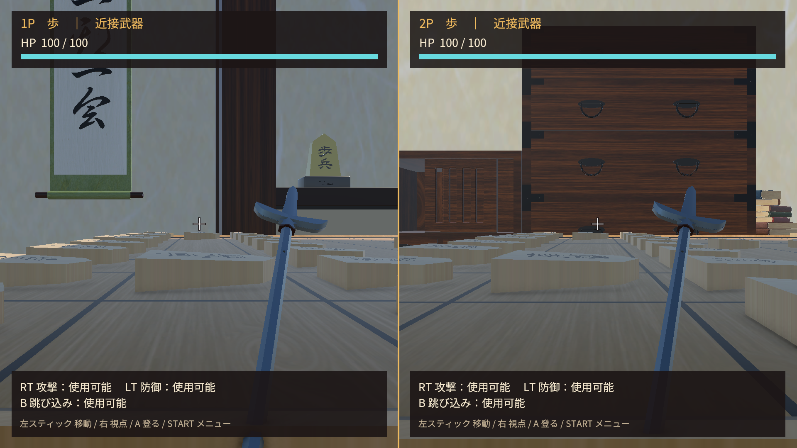
短銃・木製銃床
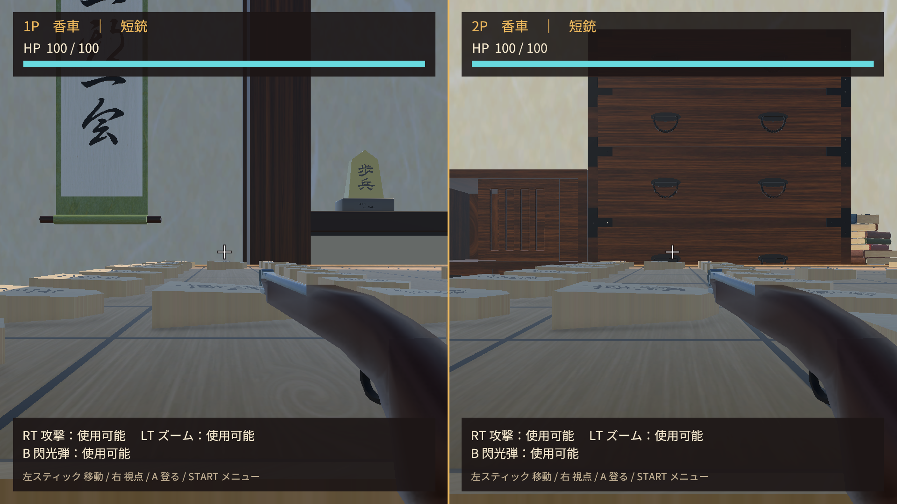
刀
赤い薙刀
青い薙刀
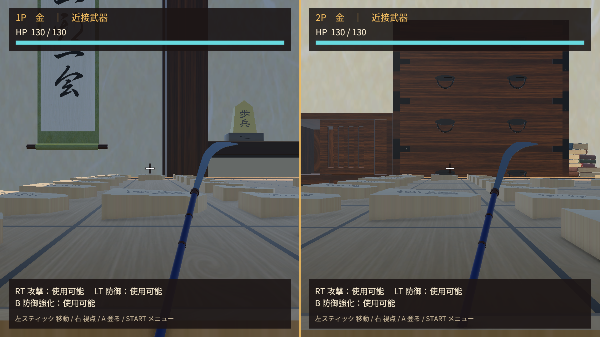
長銃
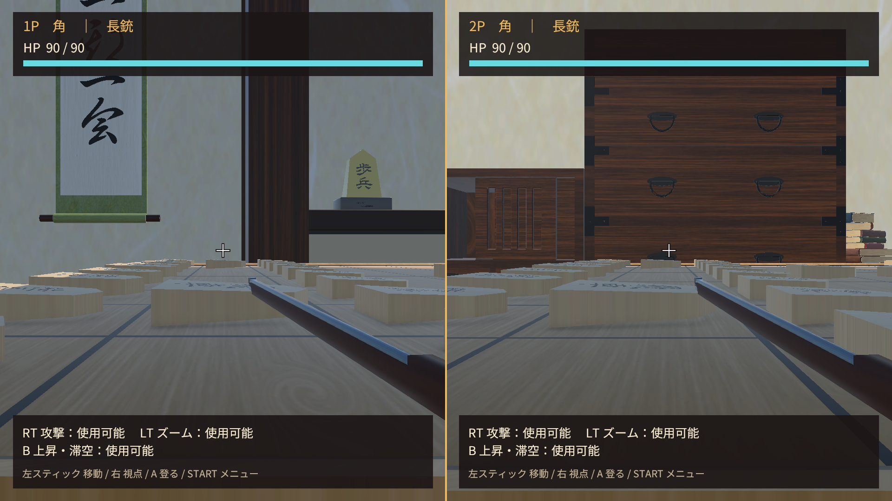
弓と矢
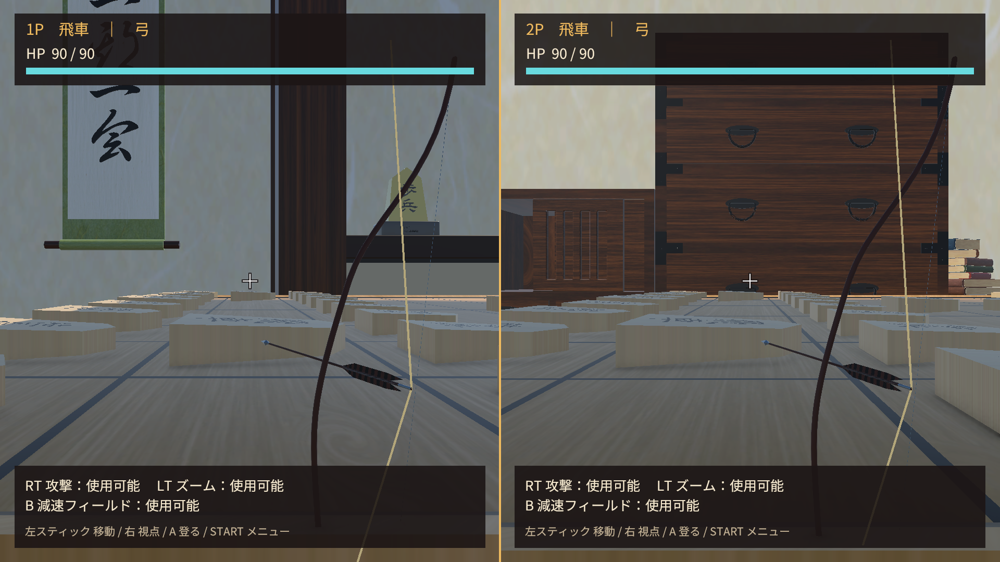
短刀
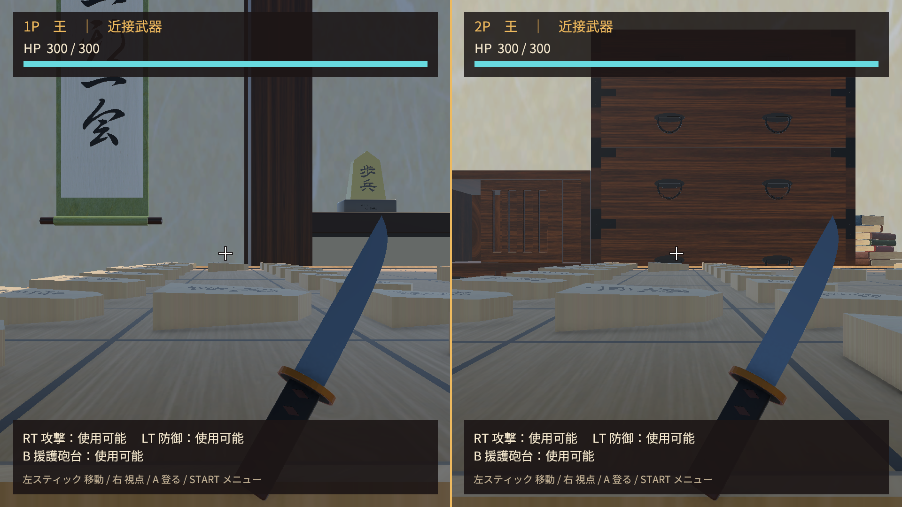
王の軍配と砲台
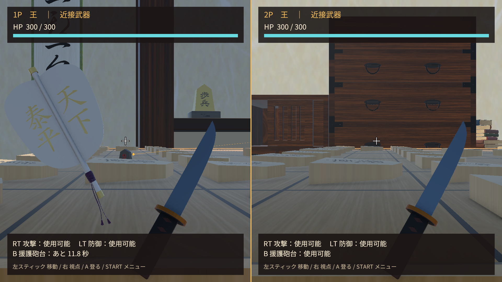
飛車の半透明フィールド
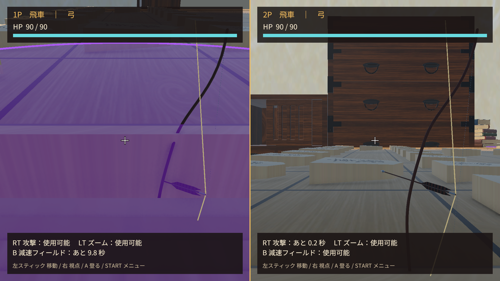
防御の表示
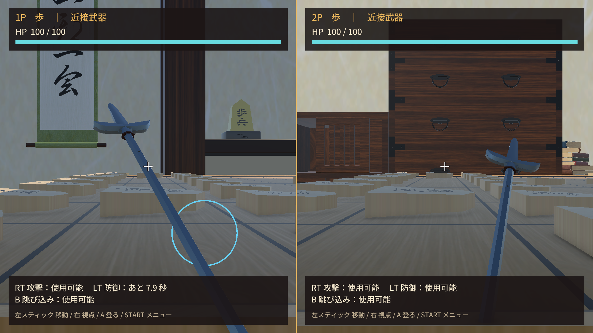
銀の強化
金の強化
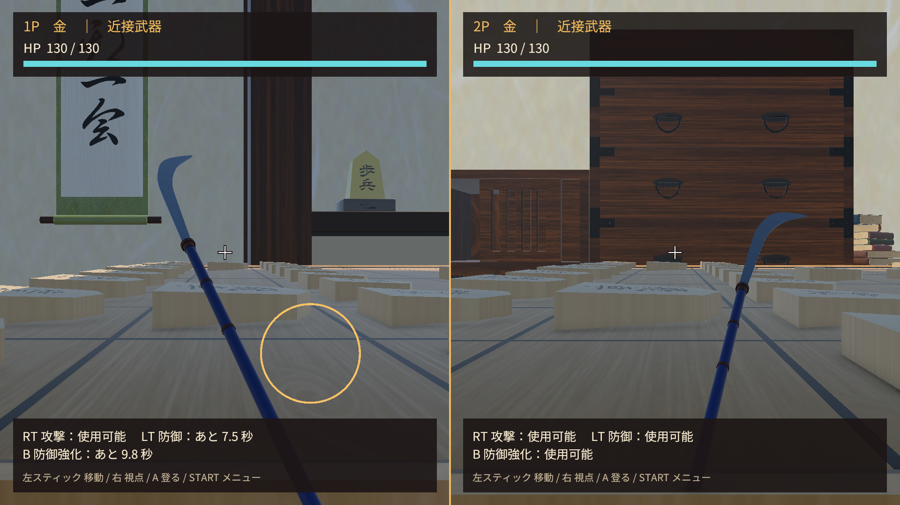
盤面
全種類・成り駒
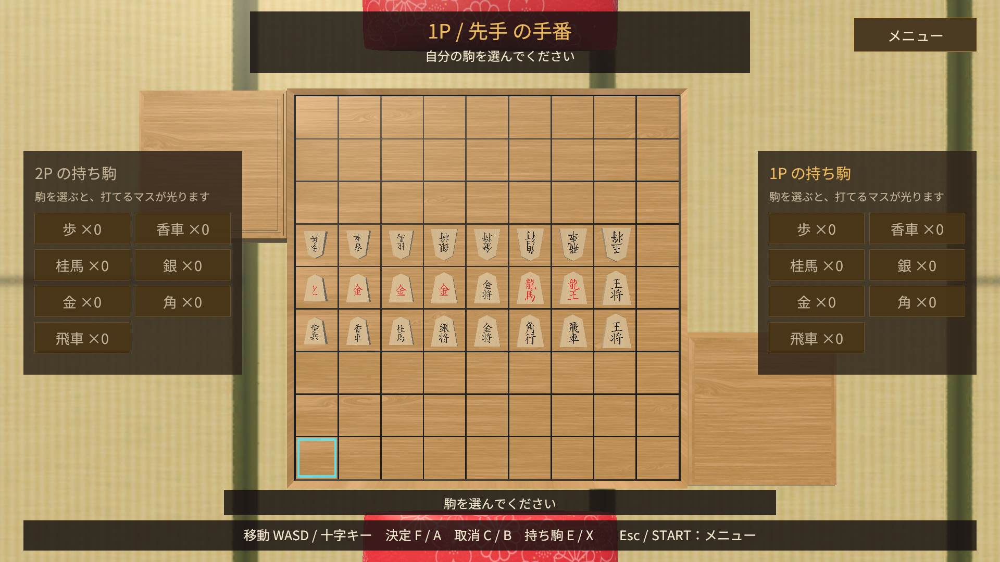
背景の形状確認：LOD 0
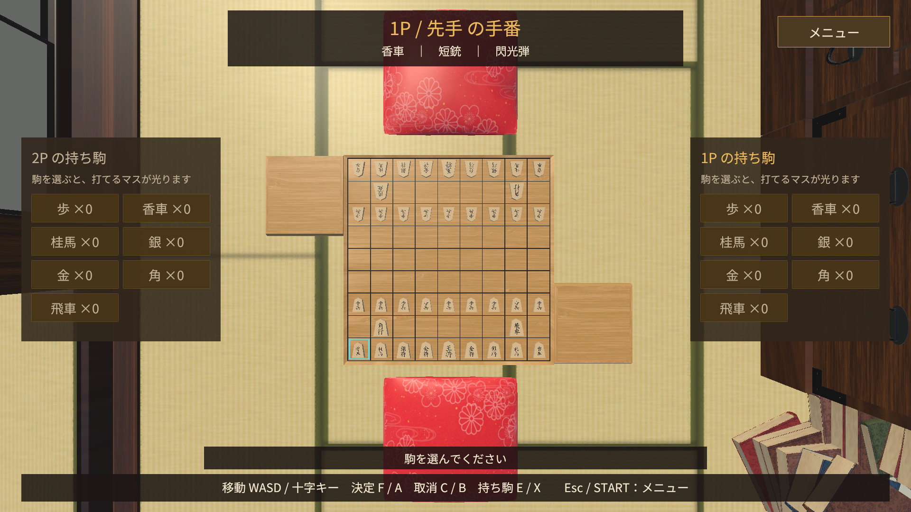
背景の形状確認：LOD 2
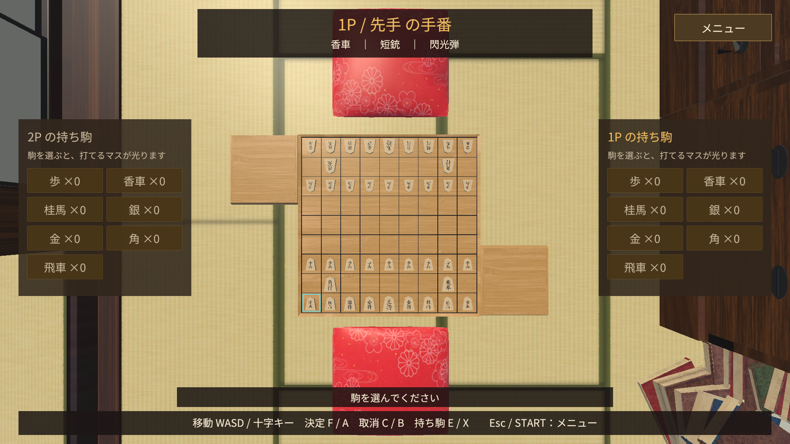
Windows版：減速フィールド
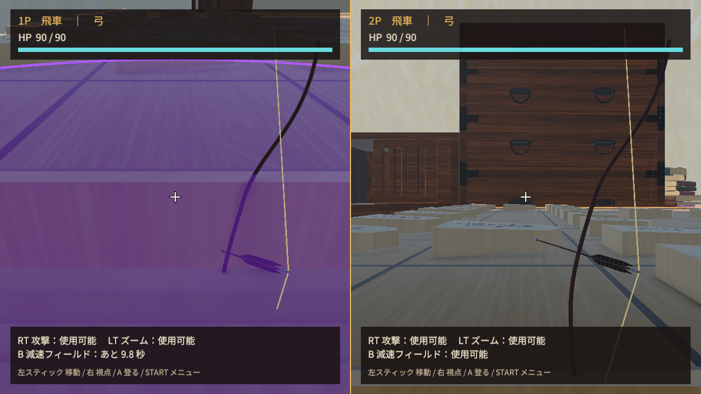
Windows版：発砲
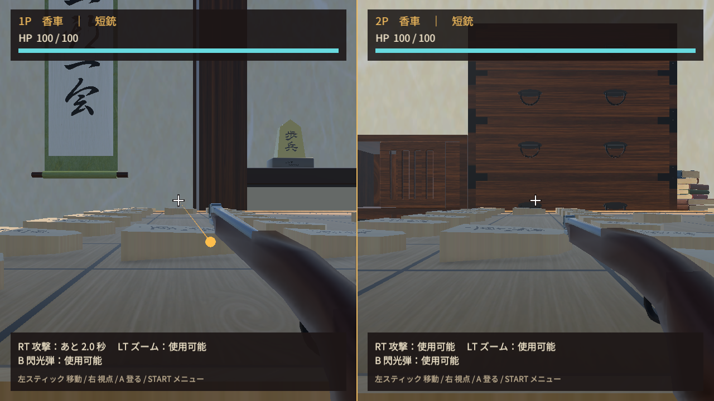
Windows版：銀の強化
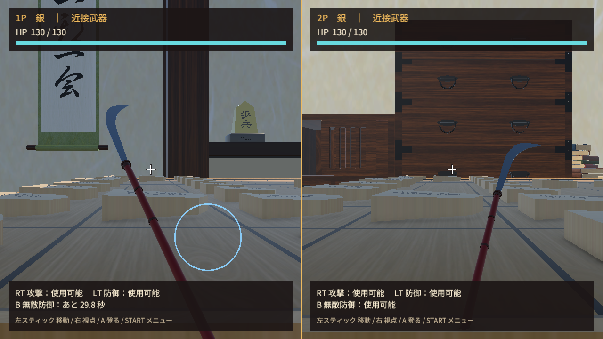
Windows版：軍配
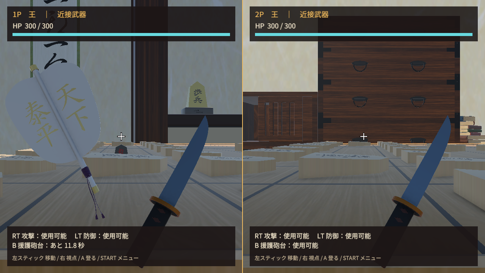
最終検証のまとめ · 通常版のビルド結果 · 通常版の起動画面 · 遊び方画面
このPCのWindows / GeForce RTX 4060で検証しました。Unity EditorはDirect3D 11、Windows実行ファイルはDirect3D 12です。実物のゲームパッド、別GPU、FPSの比較測定は対象外です。